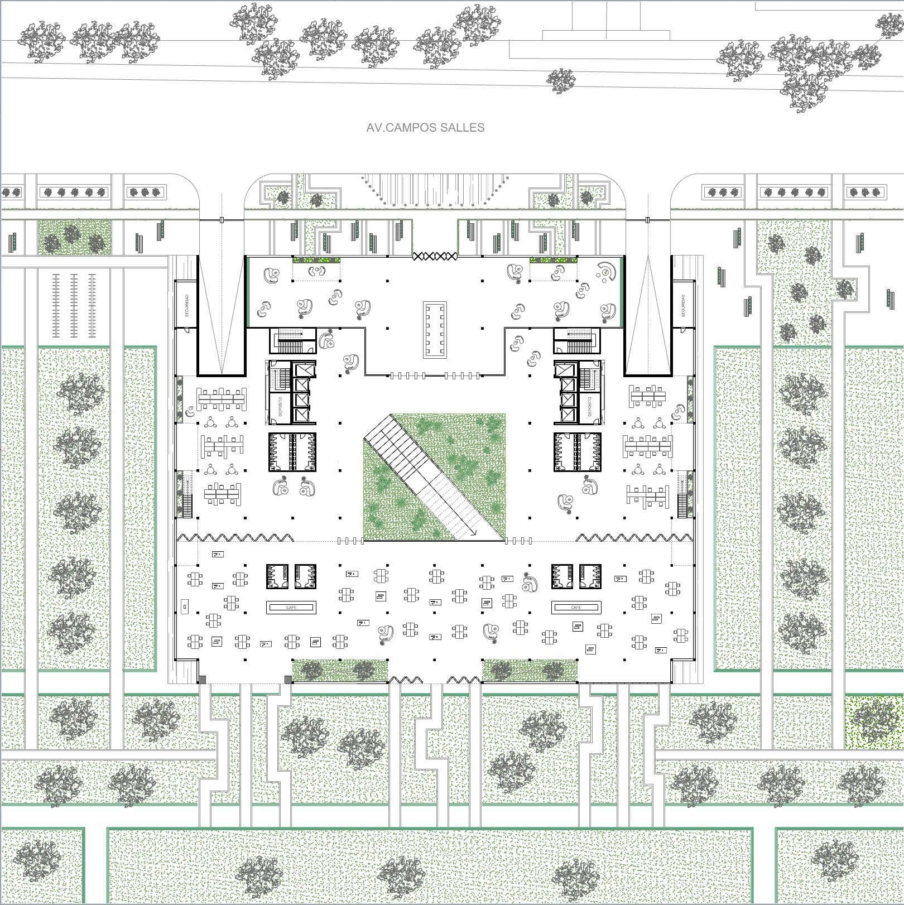
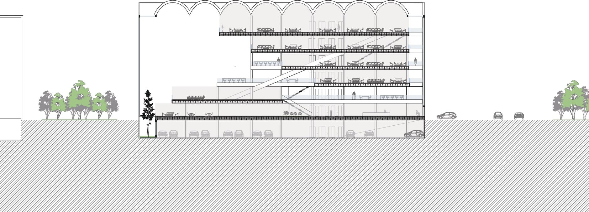
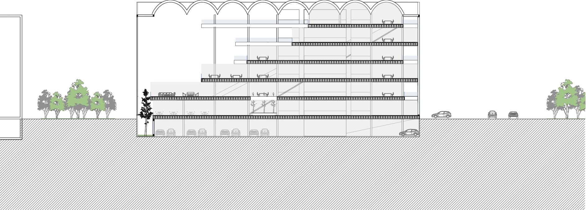
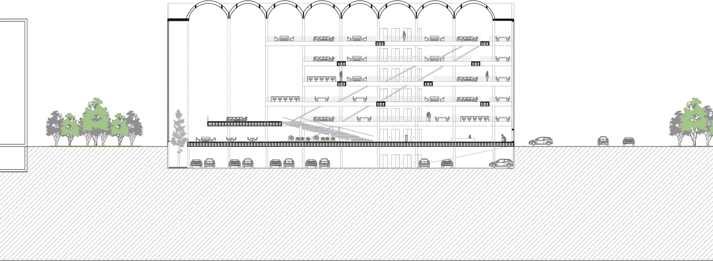
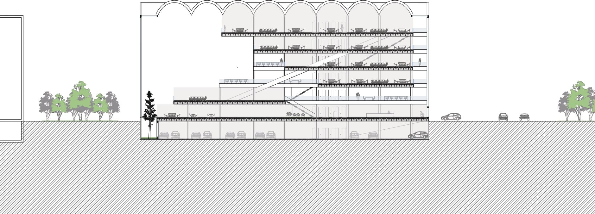
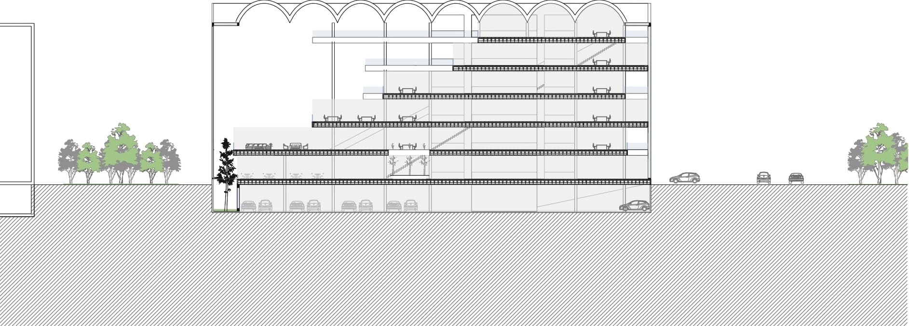
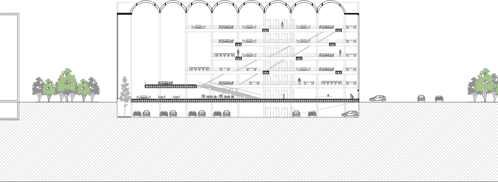
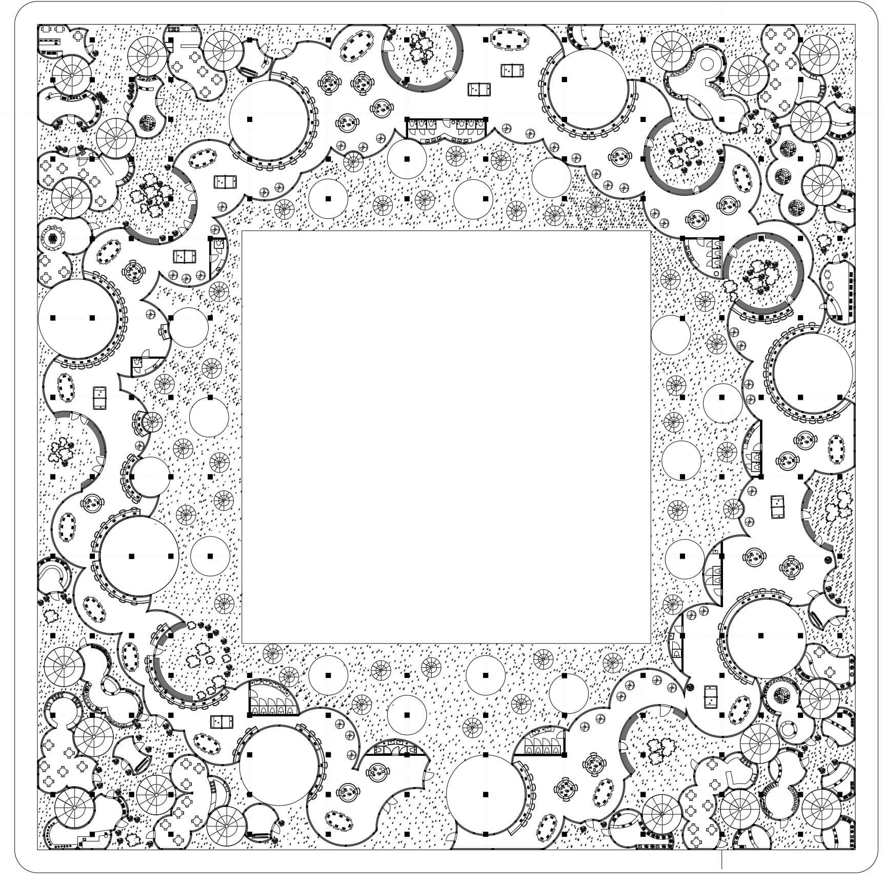

Thesis Project
Final Project_2024
Professors: Marcelo Faiden y Sebastián Adamo
The thesis proposes the conversion of deep-plan buildings in downtown Santiago, Chile, originally intended for vehicle parking and office use, into habitable spaces through the implementation of a system of courtyards and voids. This approach seeks to improve livability, ventilation, natural lighting, and urban integration, preserving the existing structures and adapting them to accommodate accessible and temporary housing.
The case study focuses on the buildings La Merced I, II, and III, whose strategic location and proximity to services, transportation, and universities make them a potential catalyst for the revitalization of downtown Santiago. The proposed strategies—circulation, courtyards, and voids—create common and private spaces that promote social interaction, reintroduce vegetation into the city, and connect the complex with its urban and natural surroundings, contributing to the economic and social reactivation of the area.

Thesis Drawings


Thesis Renders


Office Project
Project IV_2021
Professor: Rodrigo Grassi
The project consists of designing an office building located in the Innovation Park in the City of Buenos Aires. The idea that inspired the origin of the building was to orient it towards the green axis at the center of the park, as if it were an amphitheater facing nature. This concept was reinforced by the fact that the designated area for the building is located in the center, surrounded by three green spaces.
Three office sections were created: the two side sections contain tiered slabs that face the green axis and gradually decrease in size as they ascend. Meanwhile, the central section functions in reverse, with slabs extending as they rise to emphasize the building’s main entrance from the street. In this way, upon entering through the main door, the space opens up to a first-floor platform that serves as a connecting link to the green exterior, creating a space for interaction and a more informal workspace.
The building was designed for the company Globant. To define the workspaces, the functioning of the company in other locations was analyzed, opting for an open-plan layout that integrates both coworking areas and specific spaces for individual work. Moving away from the traditional office format, the company seeks to offer more informal workspaces so that employees feel at home. For this reason, many of the work areas consist of armchairs, tables, or balconies with vegetation, creating a more relaxed environment for users.
 





Vanlo Project
Project I_2020
Professor: Santiago Giusto Van Campenhaut
El proyecto organiza dentro de una manzana cinco programas -viviendas, co-working, deporte, comercio y espacio verde- se estudia la relación de conexión y desconexión de estos espacios mediante el agujereamiento progresivo del edificio.
The project organizes five programs—housing, co-working, sports, commerce, and green space—within a city block, studying the relationship between their connection and disconnection through the progressive perforation of the building. The programs are developed over three floors, plus a terrace and a basement, and are conditioned by a gradual circular void that runs through the building. This void creates various collective spaces through concavity and convexity. The block follows a square grid that defines the structure, generating an open-plan layout with only beams and columns. If masonry walls are required, they must align with the grid, whereas enclosures outside the grid must be made of glass. Consequently, when designing housing with unique shapes, these are mostly glass-walled, and their level of privacy is regulated through voids.
The voids not only organize the programs but also adhere to a set of internal regulations. There are three sizes of openings, each defining its function: the smallest ones serve as staircases, the medium-sized ones allow air and light to enter, and the largest ones are used to create greater privacy by distancing different programs. This design generates a controlled vertical connection between the programs, regulating privacy and access as needed for each space.
